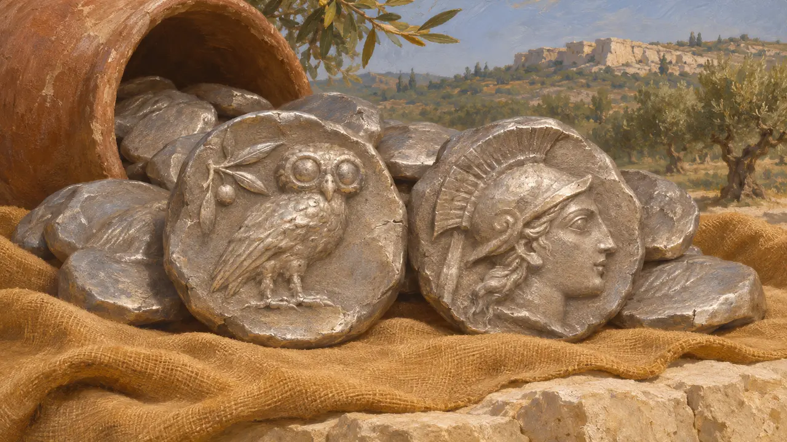
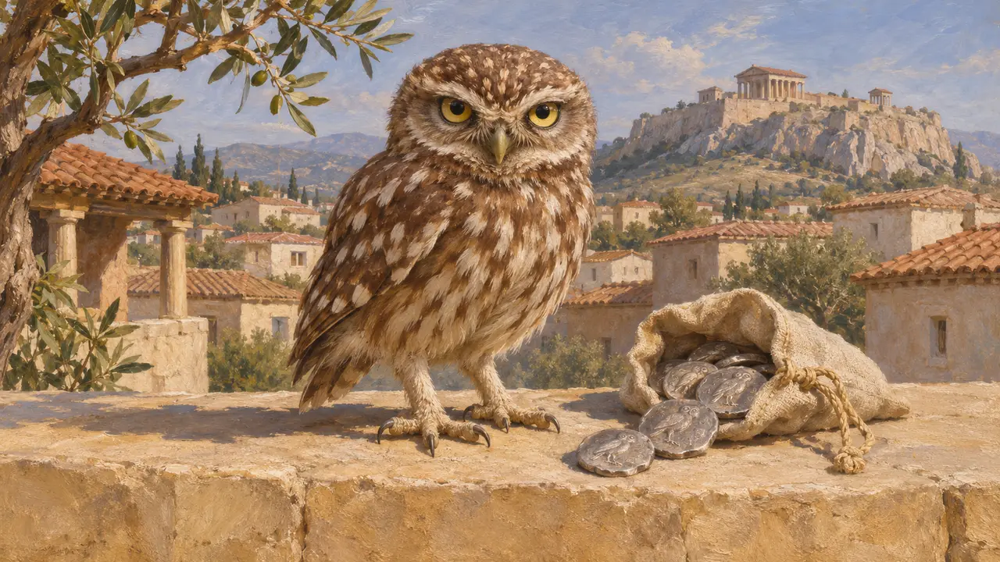
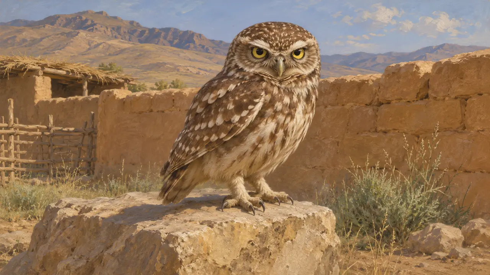
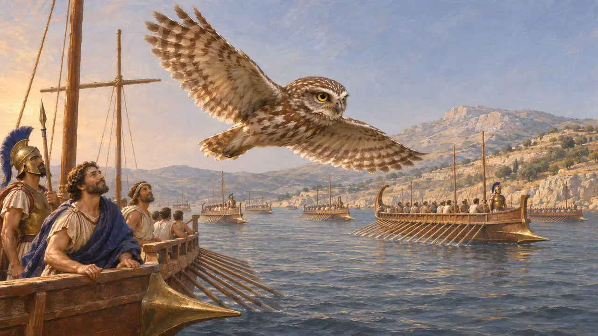

コキンメフクロウ
アテナイの銀貨に刻まれたアテナの鳥、アテネフクロウ(Athene noctua)、紀元前500〜479年頃
ゲームでは： レベル1：建国者の墓、レベル2：槍持ち、レベル3：偽り、レベル4：基壇、レベル5：勅許状、レベル6：舟橋、レベル7：サルディス炎上、レベル8：マラトン湾、レベル9：運河、レベル10：熱き門、レベル11：終幕
コキンメフクロウは、頭の丸い小さな鳥で、地中海沿岸から近東一帯の畑や岩場、廃墟の上を夕暮れに狩りをする。古代におけるこの鳥の役割でもっとも記録が豊富なのはギリシアのもので、アテナイの銀貨の図柄であり、アテナと結びつけられていた。本項の知る限り、ペルシア側の史料にこの鳥の意味を記したものはなく、ペルシア人がこの鳥をどう見ていたかは不明である。
ゲームでは： ゲームではフクロウを、パサルガダエからプラタイアまでの11の面で上空を飛ぶ鳥の一種として背景に描き、戦闘の音にも用いている。ルールには一切関わらない。スーサの低地に置いたのは設計上の選択であり、記録された習性に基づくものではない。

アテナイの貨幣のアテナのフクロウ
同時代の記録アテナイの銀のテトラドラクマ貨は、片面にアテナの頭部、もう片面にフクロウと都市名の頭文字を刻んでいた。フクロウ貨の始まりは紀元前6世紀後半とされるが、正確な十年間については学者の間で議論がある。この型はマラトンの頃には広く用いられていた。貨幣は大量に残っており、ギリシアから遠く離れた地で見つかった埋蔵貨幣にも含まれる。
C. Kraay, Archaic and Classical Greek Coins, 1976

ギリシア人著述家の記述
古代の記述アリストパネスは紀元前5世紀後半に著作を書き、フクロウがアテナイへ運ばれるという冗談を言った。これは貨幣のことであり、彼はこの鳥をアテナの伴とみなしていた。彼の言葉が示すのは戦後のアテナイの習慣であって、ペルシア人の信仰ではない。ペルシア戦争を扱うヘロドトスの中に、フクロウをどちらかの陣営の予兆とする一節があることは、本作の検証では確認されていない。
Aristophanes, Birds

ペルシア側の証拠の欠如
係争中この項目の知る限り、王碑文、浮彫、ペルセポリスの粘土板のいずれにも、コキンメフクロウにアケメネス朝にとっての宗教的・政治的意味を与えたものはない。したがって、歴史家は戦地のペルシア人がこの鳥をどう見ていたかを語ることができず、それについての主張はギリシア側の資料からの推定にすぎない。
P. Briant, From Cyrus to Alexander, 2002

サラミスでの前兆としてのフクロウ
後世の伝説戦争から何世紀も後に著したプルタルコスは、サラミスの海戦の前にフクロウがギリシア艦隊に沿って飛ぶのが目撃され、勝利の兆しと受け取られたと述べている。この話はアテナイの紋章に合致し、愛国的な物語の型をしている。この海戦についてはヘロドトスの記述のほうが古い史料であり、わかる限り、フクロウはその中に出てこない。
Plutarch, Themistocles
出典
- C. Kraay, Archaic and Classical Greek Coins, 1976
- Aristophanes, Birds
- Plutarch, Themistocles
- Herodotus, Histories
- P. Briant, From Cyrus to Alexander, 2002